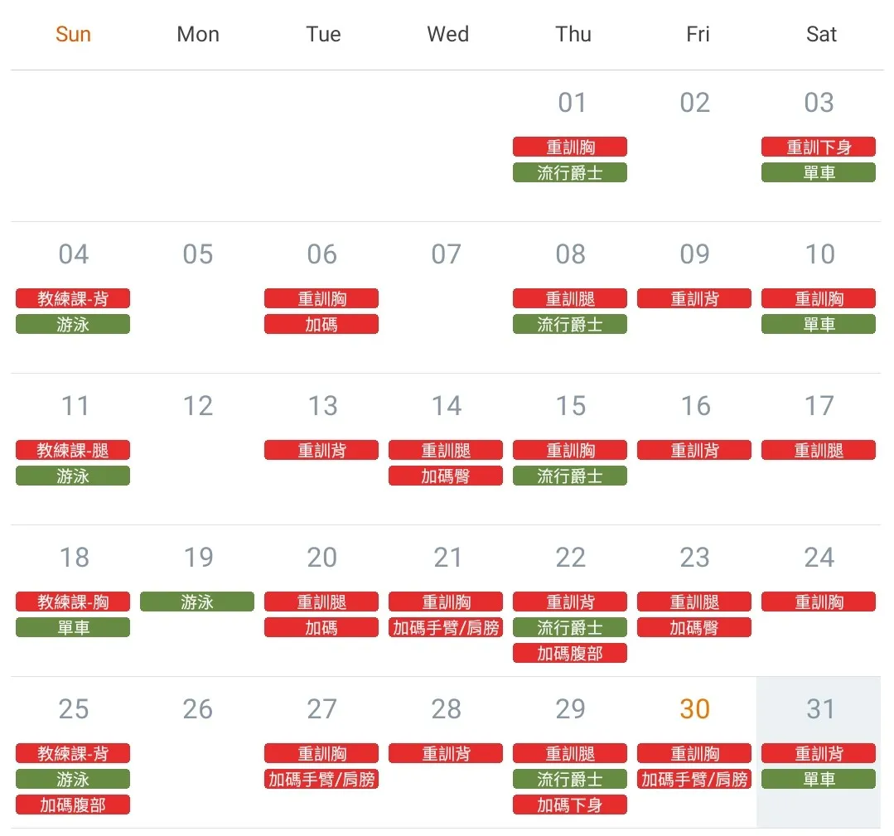

手作初試
開始學習勾針，為金在德製作第一個鴨鴨置物籃，這是從旁觀者轉為實踐者的第一步。
這段旅程始於 2016 年 4 月，透過《無限挑戰》的回歸企劃，讓原本不認識這組傳奇團體的我，因一時好奇點開節目。即便錯過了 2000 年巔峰解散的時代，我依然被那份真誠且專業的魅力所震撼。
對我而言，這不只是追星的開始，更是自我覺醒的起點。
始於「水晶廢人字幕組」出現的名詞「水晶廢人」，在熱愛中長成了各個領域的策劃者：
開始學習勾針，為金在德製作第一個鴨鴨置物籃，這是從旁觀者轉為實踐者的第一步。
以「水晶廢人字幕組」粉絲身分，用手繪應援板與勾針作品參與應援影片籌備。
在經濟窘迫、甚至需要借錢籌措旅費的情況下，飛往首爾參加首場演唱會。在那裡，我握著導師設計的台灣小黃手幅，第一次感受到設計與才華帶來的震撼。
在「#水晶文具社」聚會中，收到了同好精緻的手繪聖誕卡片。看著別人的創作，我更加確信自己也想成為能用作品傳遞能量的人。
參與資管組 D 大的新年紅包活動。其書法與刻印結合的質感，深深影響了我對美感的標準。
擔任應援組熱舞企劃小組長，在板橋與中山地下街教舞兩個月，為此減重 10 公斤，用身體記憶跨越世紀的節奏。
跟著文具社走遍全台咖啡廳，在鋼筆墨水與玻璃杯的陪伴下，用手寫記錄初心。
正式踏入設計領域。因為想為水晶男孩創作的執念，所有的練習都以他們為主題，這種動力讓我的設計實力產生質變。
7/13 李宰鎮生日這天，自發性展開為期 415 天的每日健身計畫。也因為知道李宰鎮、張水院都有重訓健身的習慣，這條「水晶健身重訓」的自我要求就更沒有鬆懈的理由。

不再只是感嘆導師與他人的才華。我正運用包裝設計與全端開發的積累，親手搭建這個數位平台，證明追星是讓我「變厲害」的軍功章。